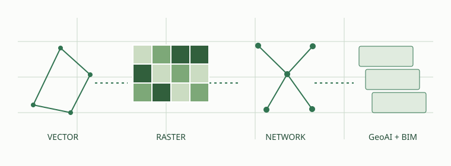

SPATIALFLARE / FIELD NOTES 01
파이썬 공간데이터 사이언스
GeoPandas에서 Spatial AI까지
공원 하나를 분석하는 데 필요한 데이터는 하나가 아닙니다. 경계는 폴리곤, 길은 네트워크, 지형은 고도 배열, 식생은 위성영상으로 표현됩니다. 이 책은 그 표현들을 연결해 설계의 판단 근거를 직접 계산하는 과정을 다룹니다.

지도를 그리는 일에서, 질문에 답하는 일로
“어디가 녹지인가?”를 넘어 “누가 녹지에 접근하기 어려운가?”, “경사가 완만한 후보지는 어디인가?”, “새 식재 이후 주변 식생 신호는 어떻게 달라졌는가?”를 묻습니다. 결과는 지도 한 장으로 끝나지 않습니다. 입력의 출처, 계산의 단위, 해석의 한계까지 함께 남깁니다.
관계를 계산합니다
건물·도로·필지·공원의 포함, 교차, 거리와 연결성을 분석합니다.
표면을 읽습니다
DEM의 높이와 Sentinel-2의 반사도를 배열로 다룹니다.
예측을 검증합니다
공간 분할, 라벨과 불확실성을 거쳐 BIM·설계 맥락에 연결합니다.
지금 실행할 수 있는 세 가지 실습
| 실습 | 핵심 질문 | 결과 |
|---|---|---|
| 07 · 버퍼와 공간조인 | 3,000㎡ 가상공원에 가까운 건물은? | 거리표, 정적 지도, Folium 지도 |
| 18 · DEM 경사도 | 완만한 지형은 얼마나 남는가? | 경사도, 향, 음영 계산과 후보 면적 |
| 22 · Sentinel-2와 NDVI | 구름을 제외하면 식생 신호가 어떻게 보이는가? | 합성 밴드 실습과 실영상 처리 절차 |
공개 초안 v0.1 · 자료 확인 2026-09-30. 현재 완성된 샘플은 위 세 장입니다. 전체 35장의 나머지 장은 집필 로드맵이며, 완성된 본문처럼 표시하지 않습니다. 세 예제의 그림은 모두 직접 생성한 가상 데이터입니다. 실제 공원 조사나 위성 관측 결과가 아닙니다.
누구를 위한 책인가
조경·도시계획의 질문은 익숙하지만 공간분석을 직접 자동화하고 싶은 실무자, QGIS의 연산을 Python으로 옮기려는 학습자, GIS와 BIM 이후 GeoAI로 나아가려는 연구자를 위한 실습서입니다. Python의 변수·반복·함수 정도를 알고 있으면 시작할 수 있습니다. 배열과 좌표계는 필요한 시점에 다시 짚습니다.
두 개의 공간 규모를 함께 사용합니다
대상지 규모: 60m × 50m의 가상공원에서 경사, 건물 이격과 식재 후보지를 다룹니다. 1m DEM은 계산을 배우기 위한 합성 자료입니다.
주변 도시 규모: 공원 주변 보행망과 수백 m~수 km의 녹지 환경을 다룹니다. Sentinel-2의 10m 픽셀 하나는 100㎡이므로 3,000㎡ 공원은 면적상 약 30셀에 불과합니다. 이 수치는 해상도에서 계산한 값이며, 경계 혼합픽셀 때문에 독립적인 공원 내부 관측은 더 제한됩니다. 위성영상은 주변 녹지와 계절 변화를 읽는 데 쓰고 개별 수목 배치의 근거로 과장하지 않습니다.
시작 전 준비
- 환경과 API 안내에서 실습용 환경을 만듭니다.
- 첫 장의 작은 가상 예제를 실행하고 표와 그림을 비교합니다.
- 공공데이터 가이드에서 한국 자료와 OSM의 출처·이용조건을 확인합니다.
- 전체를 잇고 싶다면 GeoAI·BIM 연결을 먼저 읽고 학습 로드맵을 선택합니다.
질문·수정 제안과 집필 원본은 프로젝트 저장소에 있습니다. 기존 연구와 연결하려면 소공원 BIM과 조경 IFC 4.3을 이어 읽을 수 있습니다.